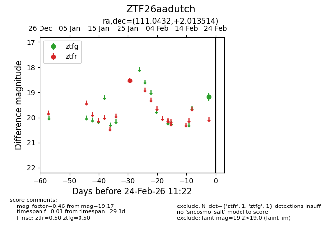
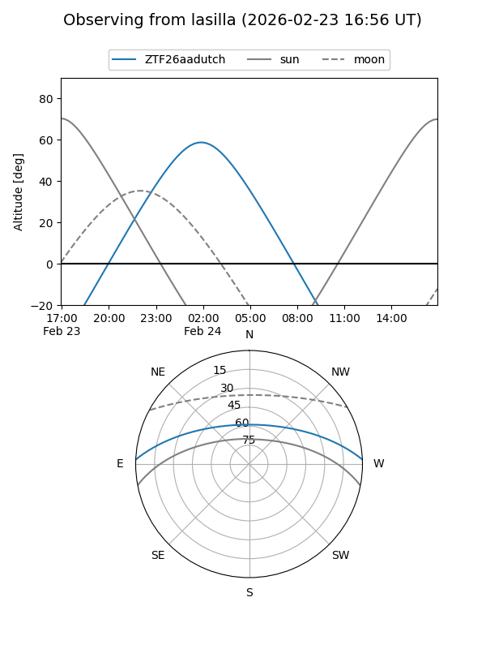
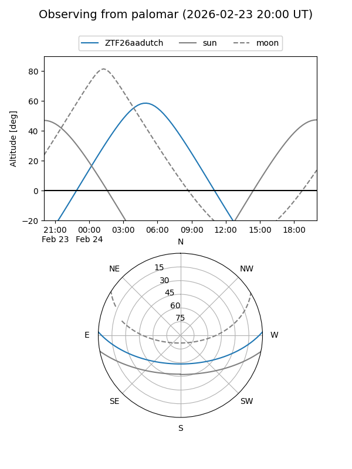

ZTF26aadutch
Target ZTF26aadutch at 2026-02-24 11:23
Aliases and brokers:
FINK: link
Lasair: link
ALeRCE: link
alt names
ZTF26aadutch (ztf,fink_ztf)
Coordinates:
equatorial (ra, dec) = 111.0432,+2.01351
equatorial (HMS+DMS) = 07:24:10.37,+02:00:48.65
galactic (l, b) = (214.8772,+8.20010)
Flags:
Photometry:
last ztfg=19.17, ztfr=18.52
1 ztfg, 1 ztfr detections
Lightcurve

Visibility


Additional plots